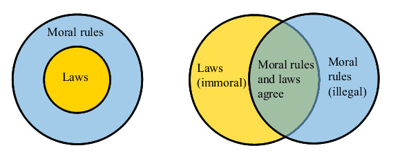

When Is It Right to Break the Law?
Ethics and law are not the same
- The law and ethics are distinct systems, each with its purpose and function.
- Actions can be morally right but illegal, and vice versa.
- It’s crucial to question and critically examine laws as they can be influenced by various factors and are not necessarily morally right.
- Individuals are called to make their own moral decisions, which is a fundamental part of being human.
- Therefore, it can be morally right, and even indicated, to break the law in certain situations.
Sometimes laws look like they protect the rich and the wealthy at the cost of the poor and disadvantaged. Sometimes laws may feel unjust. So is it true that sometimes a good person might need to break the law in the pursuit of what’s right? Can it be morally right to break the law? Or is ethics the same thing as the law?
The relationship between ethics and law
Photo by ev on Unsplash
Often you’ll hear the opinion: “What do I need ethics for? I can just follow the law! The law is the way how society has formalised the ethical principles that we’re supposed to follow. Therefore, just following the law will make sure that I’m acting morally right!”
But is this true?
This idea has obvious roots in the Christian tradition, which itself was originally a Jewish tradition, to see the laws of the state as an extension of the laws that God had decreed for his people. One still finds that in some Islamic countries and in Orthodox Judaism: the idea that God’s law and secular law are not two separate things, but that morality, religious commandments, and the laws of the state are all one and the same, all originating in the same holy books that contain the word of God. So many Western societies, having Christian origins, will still carry echoes of the idea that state law is somehow derived from divine law, and that there is some connection between state law and moral rules. But that is not really the case.

What is Alienation?
One of his best known concepts of Marxism is the idea of “alienation” that describes how human beings get estranged from their work.
The idea goes something like this: you’d have the moral rules that are, perhaps, considered the wider framework, and then you’d have the laws of the state that are more specific, and that cover only a subset of what morality covers. So that you’d think of the domain of ethics as a circle and the laws of the state as a smaller circle that’s entirely inside the other circle.
But this is a dangerous view.
It is dangerous because morality has this absolute claim to direct one’s actions. Ethics gives us rules that we are supposed to follow unconditionally, without ever questioning them: you should not steal, you should be honest, you should be loyal, and so on. But obeying state laws unconditionally is rarely a good idea. Laws are made by a Parliament, and this is not a body that’s inspired by God or by any kind of higher wisdom. The people making our laws are fallible, they can make mistakes; often enough they are greedy, perhaps corrupt, they can be bribed and lobbied, or they serve particular interest groups. So that, in the end, the laws made by such people are not necessarily worthy of being obeyed unconditionally.

Many of the laws of any given country are best ignored, rather than followed blindly, and this is why one has to be critical and sceptical about the laws and always keep questioning whether particular laws actually are morally right or not.
Your ad-blocker ate the form? Just click here to subscribe!
When is it right to break the law?
One way to see that laws and ethics are not the same is to try to find examples of cases where an action is legal but immoral; or illegal but morally right. Clearly, if we could find such cases, then we would know that the two categories cannot mean the same thing; we would also know that one cannot be entirely contained within the other, like concentric circles. Instead, we would know that law of morality are like two circles that intersect. Then you’d have an area where they intersect, and this would be the actions that are both legal and morally right. You would also have an area of actions that are legal but immoral; and, finally, an area that includes the actions that are illegal but morally right.

Wrong (left) and right relationship between laws and moral rules.
So, are there such actions? Are there actions that are morally right but forbidden by law?
Are there actions that are morally right but forbidden by law?
It’s not hard to think of something. For example, let’s say that you stand, as a pedestrian, at a red traffic light. On the other side of the road, through the cars that are crossing in front of you, you see a little child playing. And suddenly, the child looks like it’s going to run out onto the busy street!
What will you do? Stand there, obeying the law about traffic lights, or jump across the street to save the child? Ignoring the traffic light would be illegal, but saving the child would clearly be morally right, wouldn’t it? So here we have an example of an action that is illegal but morally right.
Live Happier with Aristotle: Inspiration and Workbook (Daily Philosophy Guides to Happiness).
In this book, philosophy professor, founder and editor of the Daily Philosophy web magazine, Dr Andreas Matthias takes us all the way back to the ancient Greek philosopher Aristotle in the search for wisdom and guidance on how we can live better, happier and more satisfying lives today.
Get it now on Amazon! Click here!

Bad governments provide more examples. In Nazi Germany, there were all sorts of laws that were made to deprive Jewish people of their basic human rights. Helping a Jewish citizen, or even supplying medical treatment to them if you were a non-Jewish doctor, was forbidden by law. But clearly, we would not consider such actions immoral; quite the opposite. Here, following the law would be morally wrong.
Legal but immoral
Legal but immoral actions are also common. For example, it is legal to search for tax law loopholes and to try to game the system in order to reduce one’s taxes. This can go so far that companies will move their international headquarters to improbable places like some Caribbean islands or Ireland, just to avoid paying regular taxes in their real country of origin (and business). Although such behaviour is legal, it is clearly immoral. A company that makes billions of dollars from consumers in a particular country is morally obliged to pay taxes in that country, and in this way to contribute to that country’s social security systems, public infrastructure, healthcare, schools and so on. Escaping this responsibility, even if it’s legal, is not morally right.
Another instance is the exploitation of labor in many industries. There are legal ways in which employers can pay their workers minimum wage while expecting them to work long hours, sometimes under harsh conditions. Sweatshops in the fashion industry, for example, are not illegal in many parts of the world. However, they are widely regarded as immoral due to the inhumane conditions workers are subjected to. Even though these actions abide by the law, they violate the ethical principle of fair and humane treatment of all individuals.
Another example of an action that is legal but generally considered immoral is the selling of harmful products. For instance, tobacco companies legally sell cigarettes, despite knowing they are linked to numerous health issues, including lung cancer and heart disease. These companies often employ persuasive marketing strategies to promote their products, even though they are aware of the negative impacts. While this is legal under the laws of many countries, from an ethical standpoint, it’s often seen as immoral due to the harm it causes to public health.
Differences between moral rules and laws
| Moral rules | Laws | |
|---|---|---|
| Origin | Derived from personal beliefs, societal norms, and philosophical theories. | Created by governing bodies like the parliament. |
| Purpose | Guide individuals on what is right and wrong from a moral or ethical standpoint. | Maintain order in society and provide a legal framework for rights, responsibilities, and conduct. |
| Flexibility | Can vary significantly between individuals, cultures, religions, and societies. | Uniform and must be obeyed by all individuals within a jurisdiction. |
| Consequences for Violation | Typically personal guilt, social stigma, or ostracization. | Legal consequences like fines, imprisonment, or other sanctions. |
| Examples | Saving someone’s life by crossing a red traffic light; paying taxes as a moral obligation. | Traffic laws; tax laws. |
| Absolute Authority | No, individuals are called to decide what they consider morally right or wrong. | Yes, in the sense that they have to be obeyed unconditionally by all within a jurisdiction. |
| Fallibility | Subject to personal interpretation and belief. | Laws are made by fallible people who can make mistakes. |
The essential freedom of being human
Photo by Saad Chaudhry on Unsplash
So we can see that legal and moral rightness are two entirely different things. There are actions that are legally right but morally wrong; there are actions that are morally right but illegal; and then, there are also more or less wide areas of regulations where the legal and the moral coincide.
So it’s not correct to say, for example, that abortion is morally wrong because it is against the law. This is a bad argument, because the law itself might, in this case, be an immoral law. One might, of course, believe that abortion is morally wrong (or right), but that will have to be justified with an argument that is based on ethical theories and not by just referring to the laws of a particular place.

Is Abortion Ethical?
Is abortion morally right? We look at the main arguments for and against abortion.
In the end, we all, as individuals, are called to decide what we consider to be morally right and wrong. It is part of what makes us human that we cannot give away this decision, and let others decide for us. Each one of us needs to decide for themselves which actions they want to consider morally right or wrong, even if this goes against the laws of the state.
Moral autonomy
Philosopher Immanuel Kant (1724-1804) thought that moral autonomy revolves around the idea that human beings, as rational creatures, are capable of making moral decisions independently. In other words, our ability to distinguish right from wrong and take decisions accordingly is the essence of being human. This moral autonomy, according to Kant, is not derived from religion, societal norms, or personal desires, but from our inherent ability to reason and make decisions that align with universal moral laws.
For example, imagine you find a lost wallet full of money. The societal norm might be to return it, your personal desire might be to keep it, but the autonomous moral decision would be to consider what would happen if everyone kept lost wallets. If that resulted in a world that would be impossible to picture as a working world, then the moral decision, according to Kant, is to return the wallet. This is a simple example of Kant’s idea of the ‘Categorical Imperative,’ which states that an action is morally right if it could be willed to be a universal law. It’s this ability to reason and make moral decisions that, to Kant, encapsulates the essence of being human.
You can read more about Kant’s idea right here:

Kant’s ethics is based on the value of one’s motivation and two so-called Categorical Imperatives, or general rules that must apply to every action.
Beginning with Adam and Eve and that tree with the forbidden fruits, becoming truly human has always been about claiming the right to decide for oneself what one considers a permissible action. Moral autonomy and the freedom to decide for oneself is the essence of what makes us human, and is the basis for all that is valuable about us.
And no law can take this away from us.